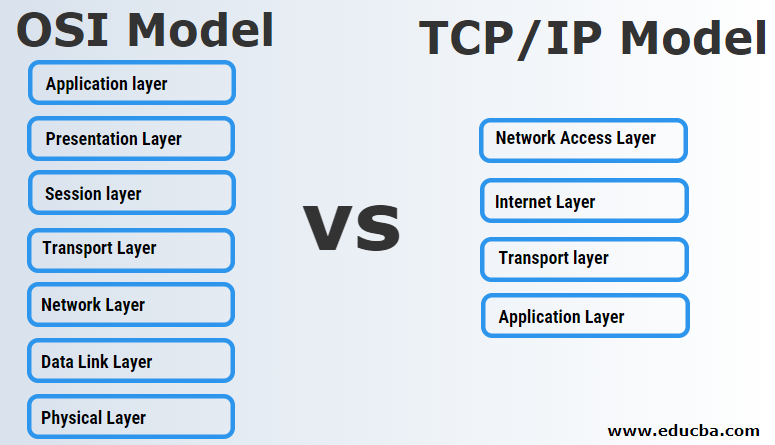
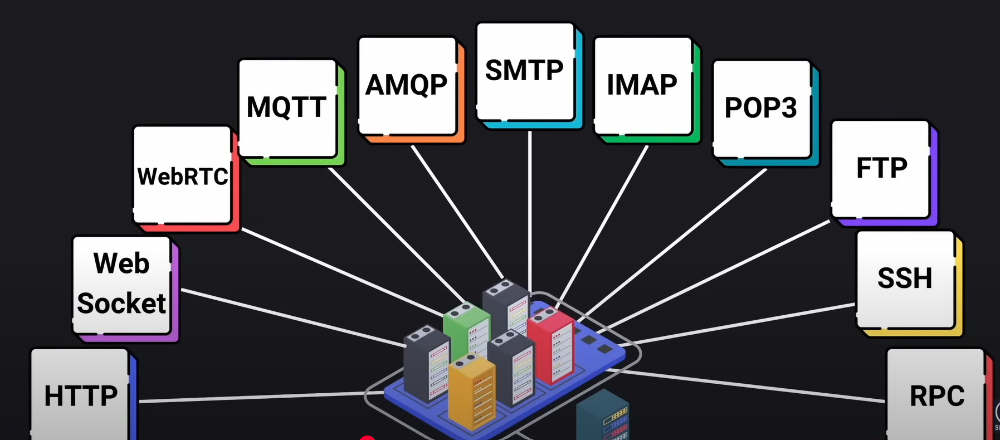
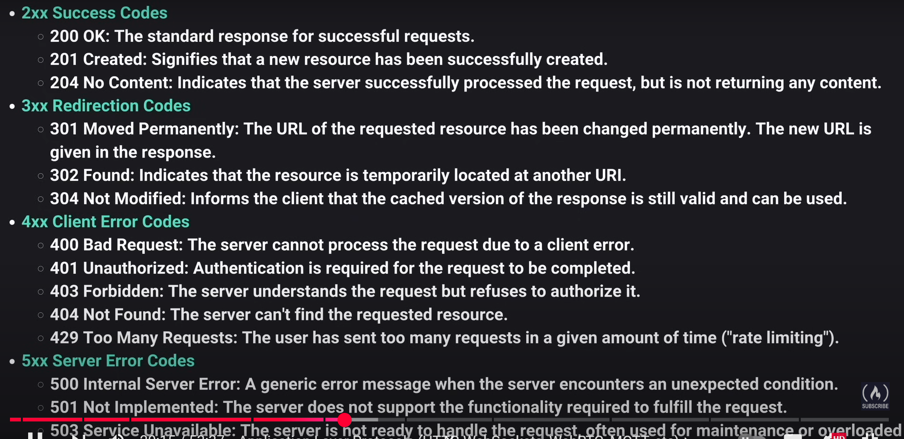

1. OSI Model & TCP/IP Model (Conceptual Understanding)
-
What they are: Both the OSI (Open Systems Interconnection) model and the TCP/IP model are conceptual frameworks that describe how network communication works. They break down the complex process of sending data from one computer to another into a series of distinct, manageable layers. Each layer performs a specific function and communicates only with the layers directly above and below it.
-
The Difference in Focus:
- The OSI Model is more theoretical and consists of 7 layers (Physical, Data Link, Network, Transport, Session, Presentation, Application). It’s a very detailed blueprint for network functions.
- The TCP/IP Model is more practical and implementation-focused, typically described with 4 or 5 layers (Network Access, Internet, Transport, Application; sometimes Physical is added as a 5th, or Network Access is split). This is the model that the actual internet protocols (like TCP and IP) are based on.

| OSI Model | TCP/IP Model |
|---|---|
| It stands for Open Systems Interconnection. | It stands for Transmission Control and Internet Protocol. |
| It is a theoretical framework for the computer environment**.** | It is a customer service model that is used for data information transmission. |
| In the OSI model, there are 7 Layers | 4 Layers are present in the TCP/IP model |
| Low in use | TCP/IP model is mostly used |
| This model is an approach in Vertical | This model is an approach in horizontal |
| In this model, delivery of package is a guarantee | In this model, delivery of package is not assured |
| The protocol is hidden in OSI and can be easily substituted and changes in technology. | In this model, replacing tool is not easy as like OSI |
-
Relevance for a Senior DevOps Engineer (Troubleshooting Focus):
- Structured Troubleshooting: You don’t need to memorize every detail of every layer. Instead, think of them as a checklist or a mental map for debugging. When a problem occurs, this layered understanding helps you systematically pinpoint the area of the network stack where the issue likely resides.
- Example Scenarios:
- Application Layer (Layer 7 in OSI/TCP-IP):
- If your web service is returning
500 Internal Server Errorsor an API call fails with a specific error message, you’re likely troubleshooting at the application layer. This involves checking your code, application logs, or web server configuration (e.g., Nginx, Apache, IIS).
- If your web service is returning
- Transport Layer (Layer 4 in OSI, Transport in TCP/IP):
- If your application can’t connect to a database service on a specific
port(e.g.,3306for MySQL) or an HTTP request never completes, you’re looking here. Issues often involve firewalls, security groups, or network ACLs blocking a specific port, or a service simply not listening on that port. Tools liketelnetornetcatare useful here.
- If your application can’t connect to a database service on a specific
- Network Layer (Layer 3 in OSI, Internet in TCP/IP):
- If servers can’t
pingeach other, or traffic isn’t reaching the correct destination IP address, the problem is often here. This points to IP addressing issues, incorrect subnet configurations, or faulty routing tables in your VPC or on a server.pingandtracerouteare key tools.
- If servers can’t
- Data Link/Physical Layers (Lower layers):
- While less common for pure DevOps in the cloud (where AWS/Azure manage the physical infrastructure), understanding these layers means acknowledging that underlying issues like faulty network interfaces, misconfigured VLANs, or even physical cable problems can exist (though rare in a fully cloud-managed environment).
- Application Layer (Layer 7 in OSI/TCP-IP):
-
Why TCP/IP is More Practical?
- Because it directly maps to the protocols you use daily (TCP, UDP, IP, HTTP, DNS), the TCP/IP model’s four-layer structure is generally more intuitive and practical for day-to-day DevOps work and cloud networking configurations. You’ll often hear discussions about “Layer 7 routing” (Application Load Balancers) or “Layer 4 blocking” (Network Security Groups) directly referencing these concepts.
Various Application Layer Protocols:
 2. IP Addressing (IPv4 & IPv6)
- Description: The unique numerical label assigned to each device connected to a computer network.
- IPv4: (e.g.,
192.168.1.1) The most common version, but addresses are running out. - IPv6: (e.g.,
2001:0db8:85a3:0000:0000:8a2e:0370:7334) The newer standard, designed for a vast number of addresses.
- IPv4: (e.g.,
- Relevance:
- Public vs. Private IPs: Understanding that private IPs are used within your cloud VPCs (e.g.,
10.0.0.0/8,172.16.0.0/12,192.168.0.0/16) and public IPs are for internet communication. - NAT (Network Address Translation): How private IPs communicate with the internet (e.g., via NAT Gateways in AWS).
- CIDR Notation (Classless Inter-Domain Routing): (e.g.,
10.0.0.0/24means a range of IPs in that network). Crucial for defining subnets and VPC ranges in cloud environments.
- Public vs. Private IPs: Understanding that private IPs are used within your cloud VPCs (e.g.,
3. Subnetting
- Description: Dividing a large network into smaller, more manageable subnetworks.
- Relevance: Essential for:
- Network Segmentation: Isolating different environments (e.g., web servers in one subnet, databases in another, each with different security rules).
- Cloud VPCs (Virtual Private Clouds): You’ll constantly define subnets (public, private) within your VPCs.
- Availability Zones: Spreading subnets across multiple AZs for high availability.
4. Routing
- Description: The process of forwarding network packets from one network to another based on IP addresses. Routers use routing tables to decide the best path.
- Relevance:
- VPC Route Tables: You’ll configure these to direct traffic within your VPCs, to the internet, or to other connected networks (e.g., VPNs, Transit Gateways).
- Default Gateway: How a device knows where to send traffic that isn’t on its local network.
5. DNS (Domain Name System)
- Description: The “phonebook of the internet.” Translates human-readable domain names (like
google.com) into computer-readable IP addresses. - Relevance:
- Service Discovery: How your applications find other services (e.g., a microservice finding a database).
- Load Balancer Integration: DNS records often point to load balancers.
- Global Traffic Management: Directing users to the nearest or healthiest application endpoint (e.g., Route 53, Azure DNS).
- Troubleshooting:
digornslookupare common tools for debugging connectivity.
6. TCP (Transmission Control Protocol) & UDP (User Datagram Protocol)
- Description:
- TCP: Connection-oriented, reliable, ordered delivery. (e.g., web Browse, email, file transfers). If packets are lost, TCP re-sends them.
- UDP: Connectionless, unreliable, faster delivery. (e.g., streaming video, online gaming, DNS queries). If packets are lost, they’re usually not re-sent.
- Relevance:
- Port Numbers: Crucial for opening firewall rules (e.g., TCP port 80 for HTTP, TCP port 22 for SSH, UDP port 53 for DNS).
- Application Requirements: Knowing which protocol your application uses for communication helps in troubleshooting network issues.
7. Firewalls, Security Groups, & Network ACLs
- Description: Mechanisms to control network traffic based on defined rules.
- Firewall: General term for a network security system.
- Security Groups (e.g., AWS): Stateful virtual firewalls that control traffic to and from instances at the instance level. They remember outbound connections to allow return traffic automatically.
- Network ACLs (e.g., AWS): Stateless packet filtering at the subnet level. Both inbound and outbound rules must be explicitly defined for return traffic.
- Relevance:
- Primary Security Control: DevOps engineers constantly configure these to secure applications and infrastructure (e.g., only allow SSH from specific IPs, only allow web traffic on port 80/443).
- Troubleshooting Connectivity: Often the first place to check when an application or service can’t communicate.
8. Load Balancing
- Description: Distributing incoming network traffic across multiple servers to ensure high availability, scalability, and performance.
- Relevance:
- Application Load Balancers (ALB / L7): Operate at the application layer (HTTP/HTTPS). Great for web apps, microservices, path-based routing.
- Network Load Balancers (NLB / L4): Operate at the transport layer (TCP/UDP). Ideal for extreme performance, static IP addresses.
- Health Checks: Critical for ensuring traffic is only sent to healthy instances.
- Ingress for Container Orchestration: Kubernetes Ingress controllers or Service LoadBalancers often provision cloud load balancers.
9. VPNs (Virtual Private Networks) & Direct Connect/ExpressRoute
- Description:
- VPN: Creates a secure, encrypted connection over a public network (like the internet) to connect your on-premises network to your cloud VPC.
- Direct Connect (AWS) / ExpressRoute (Azure): Dedicated, private network connections from your on-premises data center directly to the cloud provider’s network, offering more consistent bandwidth and lower latency than a VPN over the internet.
- Relevance: Essential for hybrid cloud architectures, where applications and data span both on-premises and cloud environments.
10. Proxies (Forward & Reverse)
- Description:
- Forward Proxy: Sits between clients and the internet, forwarding client requests. (e.g., for corporate internet access control/caching).
- Reverse Proxy: Sits in front of one or more web servers, directing client requests to the appropriate server. (e.g., Nginx, HAProxy, API Gateways, Load Balancers often act as reverse proxies).
- Relevance: Used for:
- Security: Hiding internal server IPs.
- Load Balancing: Distributing requests.
- Caching: Improving performance.
- SSL Termination: Handling encryption/decryption.
- API Gateways: Routing and managing API requests.
11. Container Networking Basics (e.g., Docker, Kubernetes)
- Description: How individual containers communicate with each other and with the outside world.
- Relevance:
- Bridge Networks: Default way Docker containers on the same host communicate.
- Overlay Networks: How containers across different hosts (e.g., Kubernetes pods) communicate as if they were on the same network. It requires Overlay plugin, for example Azure CNI is not a overlay plugin, it uses VNET’s routes.
- Service Meshes (e.g., Istio, Linkerd): Add advanced networking features (traffic management, security, observability) to microservices.
- CNI (Container Network Interface): The standard used by Kubernetes for network plugins.
12. Network Troubleshooting Tools
- Relevance: A Senior DevOps engineer should be familiar with basic network troubleshooting commands:
ping: Test connectivity to a host.traceroute/tracert: Show the path packets take to a destination.netstat: Display network connections, routing tables, interface statistics.dig/nslookup: Query DNS servers for name resolution.telnet/nc(netcat): Test if a port is open on a remote host.tcpdump/Wireshark (conceptual): For deep packet inspection (though rarely done from scratch in production, understanding its output is useful).